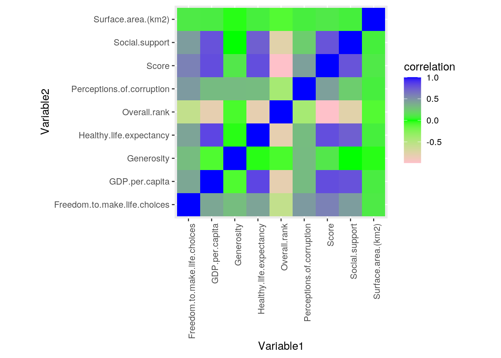
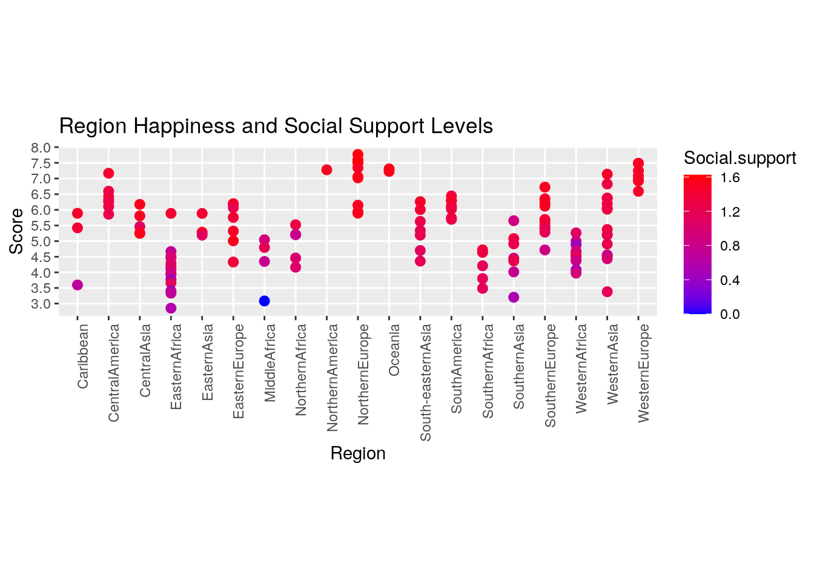
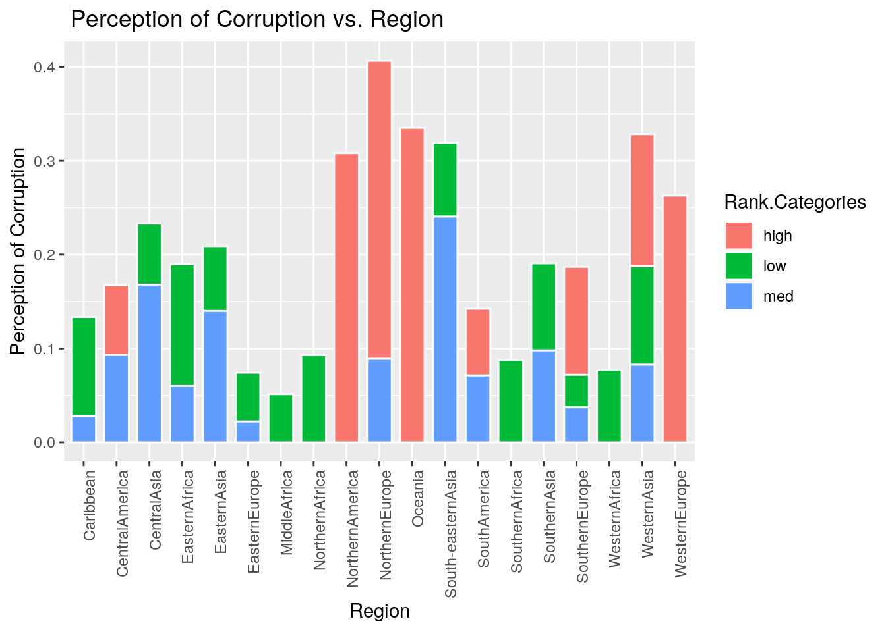
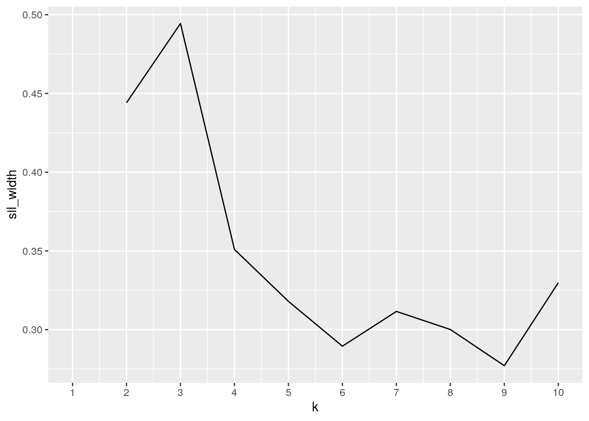
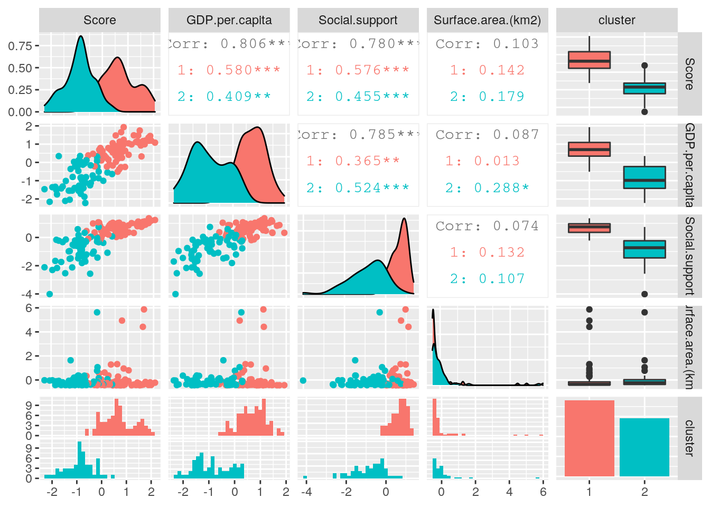
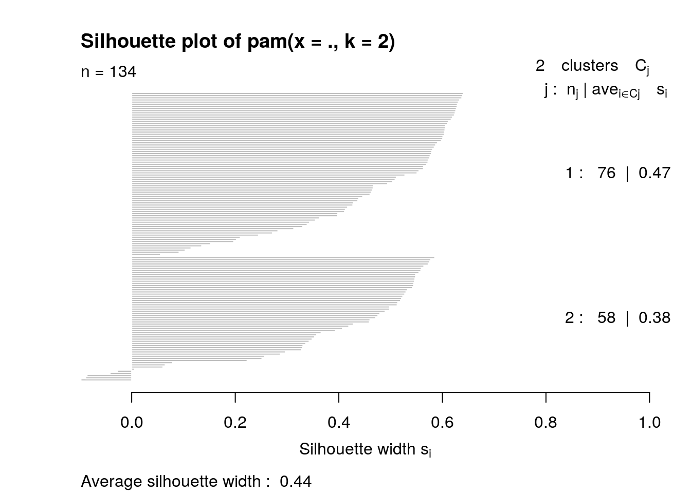

This is an R Markdown document. Markdown is a simple formatting syntax for authoring HTML, PDF, and MS Word documents. For more details on using R Markdown see http://rmarkdown.rstudio.com.
When you click the Knit button a document will be generated that includes both content as well as the output of any embedded R code chunks within the document. You can embed an R code chunk like this:
library(tidyverse)
happiness19 <- read_csv("2019.csv")
countries <- read_csv("country_profile_variables.csv")
countries2 <- countries %>% select(1:3)
totaldat <- happiness19 %>% inner_join(countries2, by = c(`Country or region` = "country"))
totaldat$`Surface area (km2)` <- as.numeric(totaldat$`Surface area (km2)`)
names(totaldat) <- str_replace_all(names(totaldat), c(` ` = "."))totaldat %>% group_by(Region) %>% summarize_if(is.numeric, c(mean = mean,
sd = sd, max_value = max, min_value = min, count = n_distinct)) %>%
pivot_longer(-1) %>% separate(name, into = c("Variable",
"Statistic"), sep = "_") %>% pivot_wider(names_from = "Region",
values_from = "value")## # A tibble: 45 x 21
## Variable Statistic Caribbean CentralAmerica CentralAsia EasternAfrica
## <chr> <chr> <dbl> <dbl> <dbl> <dbl>
## 1 Overall… mean 9.33e+1 33.1 69.6 132.
## 2 Score mean 4.97e+0 6.39 5.59 4.08
## 3 GDP.per… mean 7.23e-1 0.883 0.803 0.350
## 4 Social.… mean 1.19e+0 1.33 1.42 0.879
## 5 Healthy… mean 6.86e-1 0.847 0.717 0.480
## 6 Freedom… mean 3.38e-1 0.488 0.466 0.357
## 7 Generos… mean 2.13e-1 0.149 0.248 0.224
## 8 Percept… mean 7.97e-2 0.0824 0.106 0.125
## 9 Surface… mean 2.91e+4 351941. 800904 424372.
## 10 Overall… sd 4.76e+1 15.3 19.4 25.1
## # … with 35 more rows, and 15 more variables: EasternAsia <dbl>,
## # EasternEurope <dbl>, MiddleAfrica <dbl>, NorthernAfrica <dbl>,
## # NorthernAmerica <dbl>, NorthernEurope <dbl>, Oceania <dbl>,
## # `South-easternAsia` <dbl>, SouthAmerica <dbl>, SouthernAfrica <dbl>,
## # SouthernAsia <dbl>, SouthernEurope <dbl>, WesternAfrica <dbl>,
## # WesternAsia <dbl>, WesternEurope <dbl>totaldat %>% select(-Score) %>% summarize_if(is.numeric, c(mean = mean,
sd = sd, max_value = max, min_value = min)) %>% pivot_longer(values_to = "Avg. Value for All Countries",
contains("_")) %>% separate(name, into = c("Variable", "Statistic"),
sep = "_")## # A tibble: 32 x 3
## Variable Statistic `Avg. Value for All Countries`
## <chr> <chr> <dbl>
## 1 Overall.rank mean 78.0
## 2 GDP.per.capita mean 0.901
## 3 Social.support mean 1.21
## 4 Healthy.life.expectancy mean 0.724
## 5 Freedom.to.make.life.choices mean 0.398
## 6 Generosity mean 0.184
## 7 Perceptions.of.corruption mean 0.114
## 8 Surface.area.(km2) mean 696432.
## 9 Overall.rank sd 46.2
## 10 GDP.per.capita sd 0.406
## # … with 22 more rowstotaldat %>% mutate(Score_Categories = case_when(Score > 4 ~
"high", Score < 4 ~ "low")) %>% group_by(Region, Score_Categories) %>%
summarize(avg_Generosity = mean(Generosity, na.rm = T)) %>%
pivot_wider(names_from = "Score_Categories", values_from = "avg_Generosity") %>%
pivot_longer(-1, names_to = "Category", values_to = "Value")## # A tibble: 38 x 3
## # Groups: Region [19]
## Region Category Value
## <chr> <chr> <dbl>
## 1 Caribbean high 0.11
## 2 Caribbean low 0.419
## 3 CentralAmerica high 0.149
## 4 CentralAmerica low NA
## 5 CentralAsia high 0.248
## 6 CentralAsia low NA
## 7 EasternAfrica high 0.248
## 8 EasternAfrica low 0.201
## 9 EasternAsia high 0.121
## 10 EasternAsia low NA
## # … with 28 more rowstotaldat %>% mutate_at(vars(Score:Generosity), list(z = scale))## # A tibble: 134 x 17
## Overall.rank Country.or.regi… Score GDP.per.capita Social.support
## <dbl> <chr> <dbl> <dbl> <dbl>
## 1 1 Finland 7.77 1.34 1.59
## 2 2 Denmark 7.6 1.38 1.57
## 3 3 Norway 7.55 1.49 1.58
## 4 4 Iceland 7.49 1.38 1.62
## 5 5 Netherlands 7.49 1.40 1.52
## 6 6 Switzerland 7.48 1.45 1.53
## 7 7 Sweden 7.34 1.39 1.49
## 8 8 New Zealand 7.31 1.30 1.56
## 9 9 Canada 7.28 1.36 1.50
## 10 10 Austria 7.25 1.38 1.48
## # … with 124 more rows, and 12 more variables: Healthy.life.expectancy <dbl>,
## # Freedom.to.make.life.choices <dbl>, Generosity <dbl>,
## # Perceptions.of.corruption <dbl>, Region <chr>, `Surface.area.(km2)` <dbl>,
## # Score_z[,1] <dbl>, GDP.per.capita_z[,1] <dbl>, Social.support_z[,1] <dbl>,
## # Healthy.life.expectancy_z[,1] <dbl>,
## # Freedom.to.make.life.choices_z[,1] <dbl>, Generosity_z[,1] <dbl>totaldat %>% arrange(desc(Overall.rank)) %>% filter(Region ==
"EasternAfrica") %>% summarize_if(is.numeric, n_distinct) %>%
pivot_longer(1:8, names_to = "Statistic", values_to = "Count")## # A tibble: 8 x 3
## `Surface.area.(km2)` Statistic Count
## <int> <chr> <int>
## 1 14 Overall.rank 14
## 2 14 Score 14
## 3 14 GDP.per.capita 13
## 4 14 Social.support 14
## 5 14 Healthy.life.expectancy 14
## 6 14 Freedom.to.make.life.choices 13
## 7 14 Generosity 14
## 8 14 Perceptions.of.corruption 12cormat <- totaldat %>% select_if(is.numeric) %>% cor(use = "pair")
cormat## Overall.rank Score GDP.per.capita
## Overall.rank 1.00000000 -0.9890201 -0.81088715
## Score -0.98902010 1.0000000 0.80571672
## GDP.per.capita -0.81088715 0.8057167 1.00000000
## Social.support -0.77182664 0.7799666 0.78520042
## Healthy.life.expectancy -0.80985478 0.8028451 0.83634991
## Freedom.to.make.life.choices -0.56433176 0.5840852 0.40851909
## Generosity -0.07533295 0.1116139 -0.08700979
## Perceptions.of.corruption -0.40729168 0.4437276 0.31462573
## Surface.area.(km2) -0.09726681 0.1033516 0.08734694
## Social.support Healthy.life.expectancy
## Overall.rank -0.7718266396 -0.80985478
## Score 0.7799666405 0.80284510
## GDP.per.capita 0.7852004156 0.83634991
## Social.support 1.0000000000 0.73168799
## Healthy.life.expectancy 0.7316879899 1.00000000
## Freedom.to.make.life.choices 0.4568745333 0.42428828
## Generosity -0.0007112443 -0.02374394
## Perceptions.of.corruption 0.2334839189 0.31354660
## Surface.area.(km2) 0.0741428814 0.07558171
## Freedom.to.make.life.choices Generosity
## Overall.rank -0.56433176 -0.0753329531
## Score 0.58408521 0.1116139318
## GDP.per.capita 0.40851909 -0.0870097859
## Social.support 0.45687453 -0.0007112443
## Healthy.life.expectancy 0.42428828 -0.0237439441
## Freedom.to.make.life.choices 1.00000000 0.3064695593
## Generosity 0.30646956 1.0000000000
## Perceptions.of.corruption 0.46838045 0.3147413006
## Surface.area.(km2) 0.09691891 -0.0239365019
## Perceptions.of.corruption Surface.area.(km2)
## Overall.rank -0.40729168 -0.09726681
## Score 0.44372762 0.10335161
## GDP.per.capita 0.31462573 0.08734694
## Social.support 0.23348392 0.07414288
## Healthy.life.expectancy 0.31354660 0.07558171
## Freedom.to.make.life.choices 0.46838045 0.09691891
## Generosity 0.31474130 -0.02393650
## Perceptions.of.corruption 1.00000000 0.07789387
## Surface.area.(km2) 0.07789387 1.00000000tidycor <- cormat %>% as.data.frame %>% rownames_to_column("Variable1") %>%
pivot_longer(-1, names_to = "Variable2", values_to = "correlation")
tidycor %>% ggplot(aes(Variable1, Variable2, fill = correlation)) +
geom_tile() + scale_fill_gradient2(low = "pink", mid = "green",
high = "blue") + theme(axis.text.x = element_text(angle = 90,
hjust = 1)) + coord_fixed()
# totaldat %>% group_by(Region) %>%
# summarize(mean=mean(Score))
# %>%ggplot(aes(x=Region,y=mean))+geom_bar(stat='identity')+theme(axis.text.x
# = element_text(angle = 90, hjust=1))
totaldat %>% group_by(Region) %>% ggplot(aes(x = Region, y = Score,
color = Social.support)) + geom_point(shape = 19, size = 2.5) +
coord_map() + theme(axis.text.x = element_text(angle = 90,
hjust = 1)) + ggtitle("Region Happiness and Social Support Levels ") +
scale_color_gradient(low = "blue", high = "red") + scale_y_continuous(breaks = seq(0,
8, by = 0.5))
totaldat2 <- totaldat %>% mutate(Rank.Categories = ifelse(Overall.rank >
67, "low", ifelse(Overall.rank <= 67 & 33 <= Overall.rank,
"med", "high")))
totaldat2 %>% group_by(Region) %>% ggplot(aes(Region, Perceptions.of.corruption,
fill = Rank.Categories)) + geom_bar(stat = "summary", fun = mean,
color = "white", width = 0.75) + theme(axis.text.x = element_text(angle = 90,
hjust = 1)) + ggtitle(" Perception of Corruption vs. Region") +
xlab("Region") + ylab("Perception of Corruption")
library(cluster)
happclust <- totaldat %>% select(3:5, `Surface.area.(km2)`) %>%
scale %>% as.data.frame
sil_width <- vector()
for (i in 2:10) {
kms <- kmeans(happclust, centers = i)
sil <- silhouette(kms$cluster, dist(happclust))
sil_width[i] <- mean(sil[, 3])
}
ggplot() + geom_line(aes(x = 1:10, y = sil_width)) + scale_x_continuous(name = "k",
breaks = 1:10)
pam <- happclust %>% pam(2)
pam## Medoids:
## ID Score GDP.per.capita Social.support Surface.area.(km2)
## [1,] 36 0.6641400 0.7514004 0.7433416 -0.24249046
## [2,] 102 -0.8038238 -0.9585108 -0.7614574 -0.06601649
## Clustering vector:
## [1] 1 1 1 1 1 1 1 1 1 1 1 1 1 1 1 1 1 1 1 1 1 1 1 1 1 1 1 1 1 1 1 1 1 1 1 1 1
## [38] 1 1 1 1 1 1 1 1 1 1 1 1 1 1 1 2 1 1 1 1 1 2 1 1 1 1 2 1 1 1 1 1 1 1 1 2 2
## [75] 1 2 2 1 1 2 2 1 2 1 2 2 2 2 1 1 2 2 2 2 2 2 2 2 2 2
## [ reached getOption("max.print") -- omitted 34 entries ]
## Objective function:
## build swap
## 1.389495 1.172353
##
## Available components:
## [1] "medoids" "id.med" "clustering" "objective" "isolation"
## [6] "clusinfo" "silinfo" "diss" "call" "data"happclust <- happclust %>% mutate(cluster = as.factor(pam$clustering))
library(plotly)
happclust %>% plot_ly(x = ~Score, y = ~GDP.per.capita, z = ~Social.support,
color = ~cluster, type = "scatter3d", mode = "markers")library(GGally)
ggpairs(happclust, aes(color = cluster))
plot(pam, which = 2)